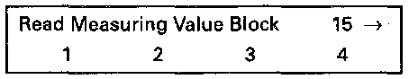
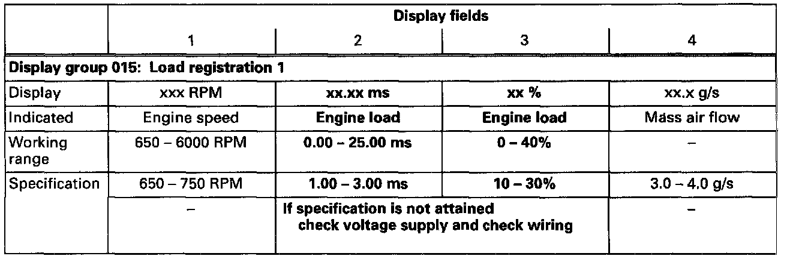
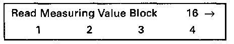
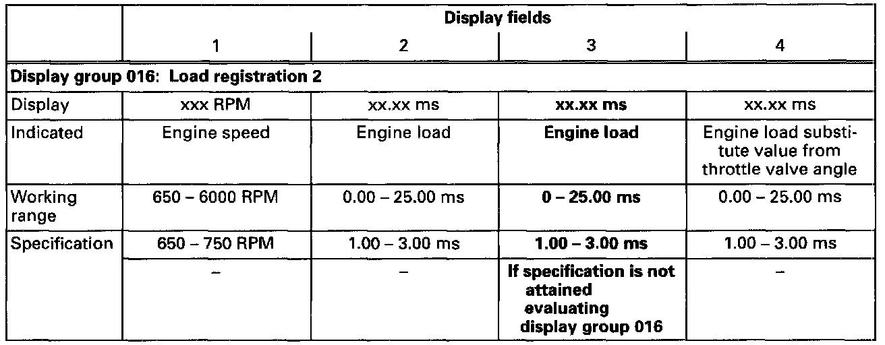
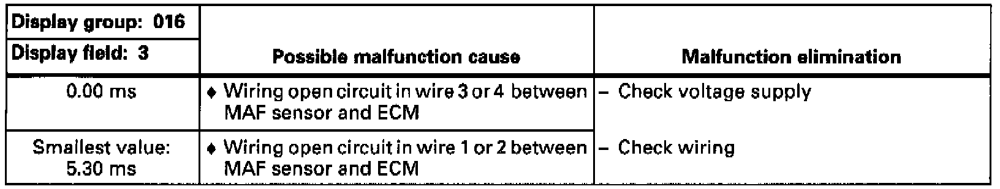
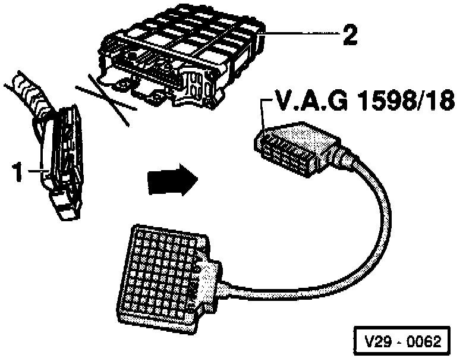

Air Flow Meter/Sensor: Testing and Inspection
Special tools, testers and auxiliary items- VAG 1551/1552 scan tool with VAG 1551/3 adapter cable.
- VAG 1598/18 test box.
- Multimeter (Fluke 83 or equivalent).
- Connector test kit VW 1594.
- Wiring diagram.
Test conditions:
- Electrical consumers switched off (radiator coolant fan must not run during the check).
- A/C switched off.
Test sequence:
- Engine running at idle.
- Connect VAG 1551/1552 scan tool and select "Engine Electronics" address word 01. Testing and Inspection

Indicated on display
- Press buttons -0- and -8- to select "Read Measuring Value Block" function 08 and press -Q- button to confirm input.

Indicated on display
- Press buttons -0-, -1- and -5- to input display group 015 and press -Q- button to confirm input.

Indicated on display (1-4 = Display fields)
- Check load registration specifications 1 (display fields 2 and 3).

- Press -C- button
- Press buttons -0-, -1- and -5- to input display group 015 and press -Q- button to confirm input.

Indicated on display (1-4 = Display fields)
- Check load registration specifications 2 (display field 3).

Evaluating display group 016

Checking voltage supply
Connector At Mass Air Flow Sensor:

- Disconnect 4-pin connector from Mass Air Flow (MAF) sensor.
- Connect multimeter with test leads from VW 1594 to measure voltage at terminals 1 and 3.
Specification: 9.0-14.5 volts.
If no voltage is present:
- Switch ignition off.
- Check wiring according to wiring diagram.
Checking wiring
- Switch ignition off.

- Connect VAG 1598/18 test box to ECM wiring harness (arrow).

- Check wiring between test box and 4-pin connector for open circuit according to wiring diagram.
- Terminal 2 and test box socket 16.
- Terminal 4 and test box socket 17.
Resistance: max. 1.5 ohms.
- Additionally, check 4-pin connector terminals for short circuit to one another.
Terminal 4 and test box socket 16.
Specification: infinite ohms .
- Set multimeter to voltage measurement range.
- Check 4-pin connector terminals for short circuit to battery positive (B+) according to wiring diagram.
- Terminal 2 and vehicle Ground (GND).
- Terminal 4 and vehicle Ground (GND).
Specification: 0 volts.
If no wiring malfunction is detected:
- Replace Mass Air Flow (MAF) sensor -G70-.
- Read the readiness code. If DTC memory has been erased, verify repair via appropriate display group, See Readiness code, creating. Testing and Inspection